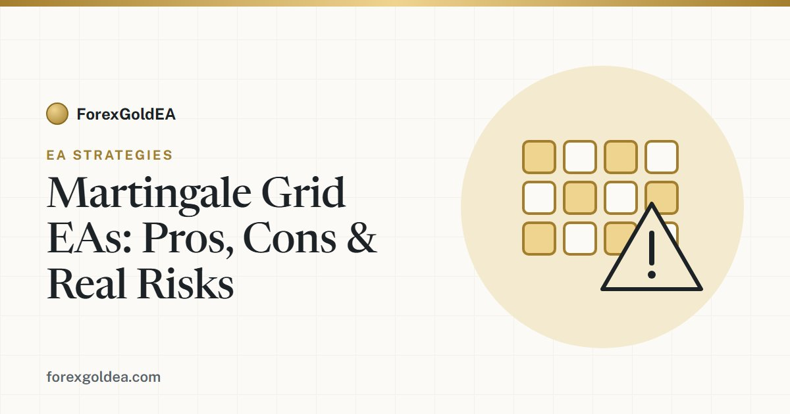

What is a martingale grid EA? Pros, cons and the risks

“Martingale” and “grid” are two of the most common — and most misunderstood — strategies behind automated trading robots. Many “set-and-forget” gold EAs use them. They can look brilliant for months, then lose everything in a day. Here's an honest explanation of how they work and what to watch for.
What is a martingale strategy?
Martingale comes from gambling. The idea is simple: after a losing trade, you double the size of the next one. When a winner eventually lands, it recovers all the previous losses plus a small profit. In theory you always come out ahead — as long as you have unlimited money and the market eventually turns your way.
In practice, neither is true. Account sizes are finite, and markets can trend against a position far longer than expected. Each doubling grows the risk exponentially, so a run of losses can escalate frighteningly fast.
What is a grid strategy?
A grid EA places a series of buy and sell orders at fixed price intervals (a “grid”), without a traditional stop loss. As price moves, more orders open and the system averages the position, aiming to close the whole basket in profit when price retraces. Grids work beautifully in ranging, choppy markets — which is most of the time.
The martingale grid combination
Many gold robots combine the two: a grid of orders whose sizes increase martingale-style as price moves against the basket. The result is a very high win rate and a smooth-looking equity curve, because the system keeps “winning” small amounts by averaging out of drawdowns. This is exactly why these EAs are so appealing to beginners — and why they're so dangerous.
Pros and cons at a glance
| Pros | Cons |
|---|---|
| High win rate; most trades close green | No stop loss on most versions — losses can be unlimited |
| Smooth equity curve in ranging markets | One strong trend can wipe the account |
| Works without predicting direction | Exponential lot growth → sudden, huge drawdowns |
| Looks impressive in short backtests | Backtests often hide the rare “blow-up” event |
So should you use one?
Martingale and grid systems aren't a scam in themselves — they're a genuine trading style with real trade-offs. But they are among the riskiest ways to automate, and the marketing around them (“90%+ win rate!”, “set and forget!”) hides the tail risk. If you choose to use one, treat it with respect:
- Understand exactly how it sizes positions and whether it has any hard drawdown cap or stop.
- Risk only a small amount of capital you can afford to lose entirely.
- Don't judge it by a few good months — the risk shows up rarely, not daily.
- Monitor it. “Set and forget” is how accounts get wiped.
A note on ForexGoldEA
Whatever EA you run, the most important thing is to know its strategy and its risk controls before you fund a live account. We believe in trading gold with defined risk rather than chasing a flawless-looking equity curve. Always test on a demo first, size your risk sensibly, and keep realistic expectations.
Affiliate disclosure: we earn a commission when you open and fund an account through our partner links, at no extra cost to you.
Frequently asked questions
What is a martingale grid EA?
A martingale grid EA is a robot that opens additional trades as the market moves against it, increasing lot sizes to recover losses when price reverses. It rarely uses a hard stop-loss, so open risk grows the longer a trade stays underwater.
Is martingale trading safe?
No. Martingale and grid strategies can show smooth profits for a while, but a single strong trend without a reversal can wipe out an account. The risk is hidden until it isn't, which is why they are considered high-risk.
Why do martingale EAs look profitable at first?
Because they win most small trades and recover many losers, the equity curve looks smooth early on. The danger is the rare, large losing sequence that erases months of gains in one move.
Does ForexGoldEA use martingale or grid?
No. ForexGoldEA avoids martingale and grid entirely. It uses a rule-based strategy with a fixed stop-loss and take-profit on every trade, so your risk per trade is defined and transparent.
Can you make money with a grid EA?
Sometimes, in ranging markets, but the strategy carries serious tail risk. If you use one, use strict limits, small sizing and money you can afford to lose, and understand that a strong trend can cause a large loss.